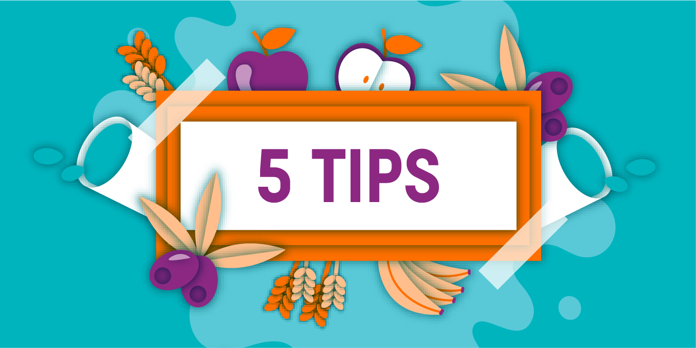
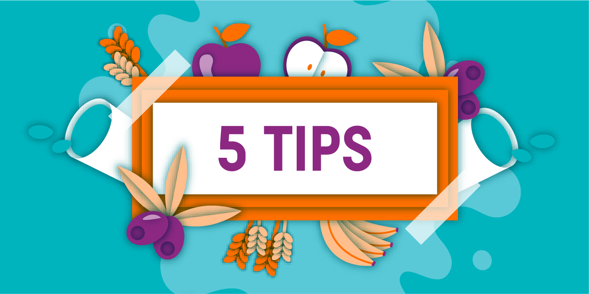

Pasar de una mala alimentación a una saludable no es tan difícil como mucha gente cree. No son necesarias ni dietas estrictas, ni tener que quedarse encerrados en casa. Por suerte, vivimos en un país con gran cultura gastronómica lo que hace que nuestra alimentación suela ser variada y nutritiva. Por esa razón, muchas veces con cambiar solo algunos gestos es suficiente.
Come grasas con cabeza
Para comer sano no es obligatorio suprimir las grasas. Eso sí, resulta fundamental distinguir entre las buenas y las saturadas y elegir siempre las primeras. Por otro lado, varios trucos a la hora de cocinar como saltear las verduras con agua o escurrir la pechuga de pollo en un papel de cocina tras pasarla por la plancha, nos ayudarán a eliminar grasa que realmente no aporta demasiado.
Apuesta por las legumbres
Mucha gente confunde una alimentación saludable con pasar hambre y para nada es así. Si comemos las cantidades adecuadas regularmente no deberíamos pasar hambre. En cualquier caso, si estamos acostumbrados a comer más de la cuenta, el poder saciante de las legumbres puede ayudarnos a rebajar las cantidades de otros alimentos menos saludables. Te recomendamos introducirlas en tu dieta dos o tres veces por semana y verás cómo tu ansía por comer disminuye.
Cambia el azúcar por la canela
Es inevitable, ya sea por el placer que sentimos o por otros motivos como el estrés, la falta de sueño o el haber hecho ejercicio, nuestro organismo nos pide ingerir alimentos dulces más veces de lo que debería. Una forma de darle lo que quiere pero sin que sea perjudicial para nosotros es cambiando el azúcar por la canela. Esta rica especia es una potente activadora del metabolismo y favorece el control de los niveles de glucosa. Por ello, su consumo nos ayudará a mantener los niveles óptimos de energía y reducirá nuestra ansiedad.
Limita la cantidad de sal
Tomar sal en dosis altas representa un peligro para nuestra salud cardíaca y renal. Dado que se encuentra escondida en muchos de los productos del supermecado, muchas veces la ingerimos en exceso casi sin darnos cuenta. Por eso, es recomendable limitarla o incluso eliminarla cuando cocinemos los alimentos nosotros mismos. En este caso, la mejor forma de potenciar el sabor de nuestras recetas es utilizando especias. No hay que tener miedo ni siquiera de las más picantes como el chili, el curry o el pimentón. Siempre y cuando no padezcamos de problemas estomacales, los condimentos picantes son beneficiosos porque impulsan las funciones del metabolismo.
Ojo con las calorías líquidas
Tan importante como lo que comemos es lo que bebemos. Muchas personas, de hecho, engordan más por la cantidad de refrescos o alcohol que ingieren que por los alimentos sólidos que comen. Esto tiene una fácil solución: beber agua, agua y más agua. Como decíamos en nuestro Reto 21 días, lo ideal es beber entre dos litros y dos litros y medio de agua al día. Da igual el calor que haga, no olvides que el H20 es lo mejor para refrescarse. Y en invierno, cuando quizá no apetece beberla tanto, una buena forma de introducirla en la dieta es a través de las infusiones. Té, hierbabuena o manzanilla, elige la que más te guste.
|


 
